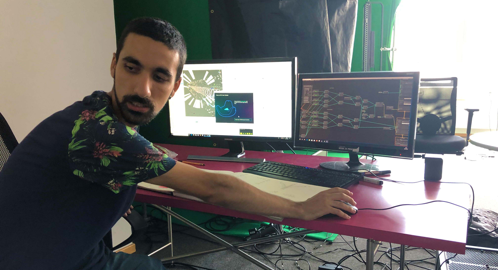

AUDIOMERSION


Abstract
A virtual reality dive into an individually chosen tracklist.
The player darts through a tunnel of soundwaves that can
be bent by leaning into curves.
At the same time, a multitude of visual effects pulse along
to the music due to the integration of Spotify Audio Analysis
for tracks.
Additionally, the controllers rumble corresponding to
the song’s volume, further immersing the player in the
experience.
Details
Production
04/2019 - 05/2019
Time
3 weeks
Engine
Unity
Platform
PC - Virtual Reality
Team
Lars Lorenz
Jan Ortgies
Josephine Pallus
David Vivas Estevao
Philipp Wagner
| Production | 04/2019 - 05/2019 |
| Time | 3 weeks |
| Engine | Unity |
| Platform | PC - Virtual Reality |
| Team | Lars Lorenz Jan Ortgies Josephine Pallus David Vivas Estevao Philipp Wagner |
Gameplay
Assume a comfortable sitting position that allows the upper body
to be reclined and the lower body to be moved sideways, e.g. in a bean bag.
By holding two controllers and having two trackers strapped to your legs you
can control the flow of movement and interact with the surrounding waves.
Leaning forward and backward bends the sound tunnel up or down while tilting your knees
to the sides evokes a curve in the corresponding direction.
There are three different visual environments to cycle through by fully leaning
to one side for a short duration, those environments being a bright neutral one,
a darker vibrant one, and lastly, an aquatic one.
Learnings
- Theoretical and applicable basics of Virtual Reality
- Accessing external REST APIs
- From-and-to-JSON formatting
- Coordinating processes via events

Credits
Special Thanks to our coaches
Prof. Susanne Brandhorst and Prof. Thomas Bremer